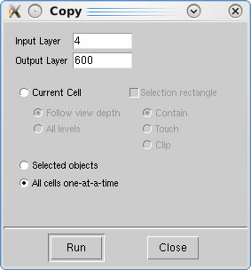

You can
copy objects on an existing layer to a new layer.
Procedure
- Choose .
This displays the Copy
dialog box.
Figure 1. Copy All Cells on a Layer Dialog Box
- Select the “All cells one-at-a-time” option.
- Specify an Input Layer (the input layer must
be an existing layer).
- Specify an Output Layer (the output layer can
be an existing layer or a layer that does not exist).
- Click Run.
The objects on the
specified input layer are copied to the specified output layer.
If you specified an output layer that did not exist, the newly-created
layer will appear in the Layers Browser.